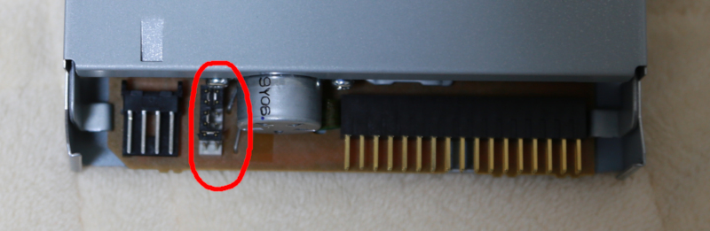
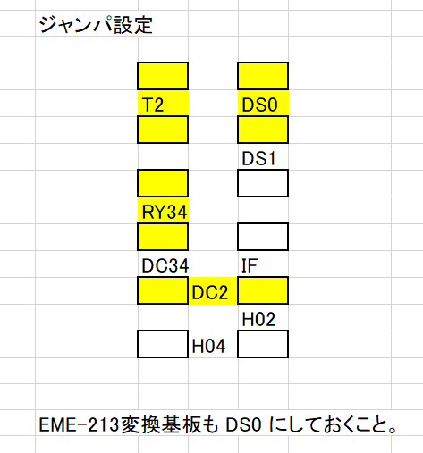
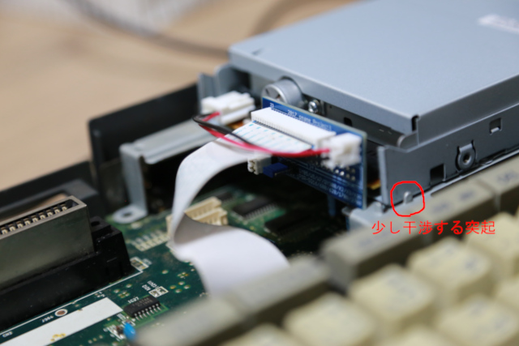

YD-702D-6639Dの後ろの電源コネクタの脇にジャンパピンが付いています。これをつかってドライブの動作をカスタマイズできます。

下図の黒い四角がピンと思ってください。黄色いところを繋げるようにジャンパピンを配置してください。

この意味は、
IF=未接続, T2=接続 で、「ディスクによって 720KB と 1.2MB を自動切り替え」の動作モード。
RY34=接続 で、「端子34 に Ready信号を出力」。
DC2=接続 で、「端子2 に DiskChange信号を出力」。
DS0=接続 で、「端子10 の DriveSelect0信号を入力」。
です。
他の動作モードを知りたい場合は、YD-702D-6639D の仕様書などを参照ください。
「電子楽器(EME-213**)用FDD交換基板v2.01」にも青いジャンパーピンが付いていると思いますが、デフォルトで DS1 の設定になっています。
これを DS1 側に変更しておいてください。この設定がドライブと異なっていると正常に動作しません。
YD-702D-6639D に付いているベゼルは取り外してください。
上側の金属部はスライドさせると外せます。これを外すとベゼルの爪が露出するので、ベゼルを外せるようになります。
ベゼルを外した後は、金属部を戻してください。
あとは、FS-A1GTを開けて、本体から出ているフラットケーブルのドライブ側を引き抜き、「電子楽器(EME-213**)用FDD交換基板v2.01」に差し込みます。
向きを間違えないようにしてください。
また、フラットケーブルの露出している端子は、素手で触らないでください。触ると腐食する原因になります。
「電子楽器(EME-213**)用FDD交換基板v2.01」を YD-702D-6639D に接続。
内蔵ドライブを取り外し、代わりに YD-702D-6639D を取り付けます。
ドライブを固定しているA1GT側の金属部品の突起が YD-702D-6639D にぶつかりますが、私はその突起を少し(0.1mmくらい？)動かしてはめ込みました。

キーボード側の外装を外した状態でも動作しますので、その状態で動作確認して、問題なければ外装を閉じるのが良いと思います。
外装を閉じるとき、YD-702D-6639D のイジェクトボタンがぶつかりやすいので、ご注意ください。
テストとしては、フォーマットできること、書き込み、読み出しできること、FILESなどしてアクセスした後にディスクを交換して FILES すると
交換したディスクの情報に変化すること、等を確認して終了です。
半田付けなどを必要としない改造なので、難易度は低めです。
しかし、間違えれば FS-A1GT を壊してしまうリスクがあるので、そのリスクを負ってでもディスクドライブを使いたいという人向けの記事です。
最近は、SDカードスロットを増設するカートリッジも存在しますし、フロッピーディスク自体が高値になっていますので、
必ずしも FDD が使えないと困るという状況でもありません。挑戦を検討している方は、リスクに見合うだけの価値があるか十分吟味をお願いします。
[前へ]